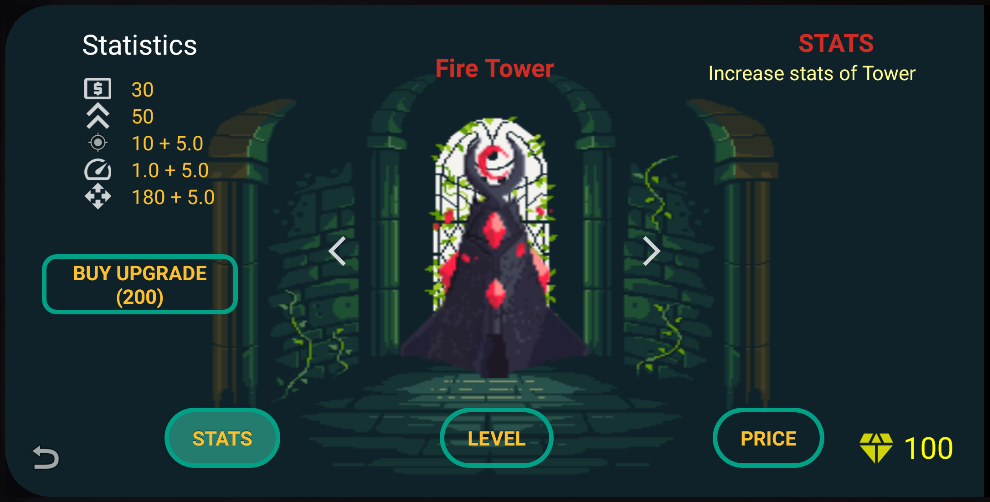

Upgrades
In diesem Menü kann der Spieler für seine Türme permanente Upgrades gegen Diamanten eintauschen
- (Statistics) - Auflistung der Statuswerte der Türme
- (Pfeiltasten) - Damit wechselt man von einem zum nächsten Turm und zurück.
- (BUY UPGRADE) - Kaufe ,mit Hilfe der erspielten Diamanten, in den Ausgewählten Rubriken ein/oder mehrere Upgrade/s.
- (Name der Türme) - Der Name der Türme steht über den Türmen :D.
Upgrade Rubriken:
- (STATS) - Statuswerte der ausgewählten Türme werden erhöht.
- (LEVEL) - Erhöhe den maximalen Level der Türme.
- (PRICE) - Senkt den Preis der Türme im Spiel.